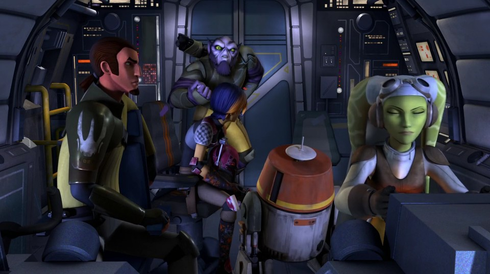

Эпизод II: Атака клонов
«Звёздные войны. Эпизод II: Атака клонов» (англ. Star Wars Episode II: Attack of the Clones) — эпический приключенческий фильм 2002 года в жанре космическая опера, снятый режиссёром Джорджем Лукасом по сценарию, написанному самим Лукасом в соавторстве с Джонатаном Хейлсом. Пятый фильм в режиссёрской карьере Лукаса. Он является пятым фильмом из восьми, выпущенных в рамках серии «Звёздные войны», являясь при этом вторым в хронологической последовательности сюжета саги. Девятнадцатый полнометражный фильм выпущенный кинокомпанией Lucasfilm. Премьера состоялась 16 мая 2002 года. Один из первых в истории кинематографа фильмов полностью снятых на цифровую кинокамеру.
Действие фильма разворачивается через десять лет после битвы за Набу, когда галактика втягивается в гражданскую войну. Под руководством джедая-отступника графа Дуку тысячи солнечных систем угрожают выйти из Галактической Республики. После покушения на сенатора Падме Амидалу, бывшую королеву Набу, 19-летний падаван Энакин Скайуокер назначается для её охраны, пока его учитель Оби-Ван Кеноби пытается разгадать, кто является заказчиком убийства. Кеноби преследует наёмного убийцу Джанго Фетта и оказывается в самом сердце скопления сепаратистских сил. Энакин, Падме и джедаи спешат ему на помощь и вступают в бой с дроидами сепаратистов. Совет Республики наделяет канцлера Палпатина неограниченными полномочиями, он посылает в бой с сепаратистами армию клонов. Начинаются Войны клонов.